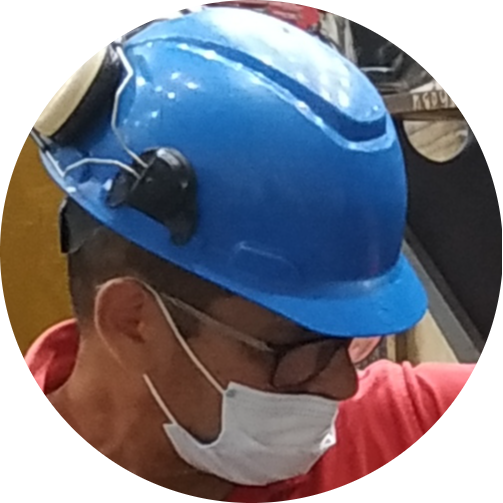

|  | PEDRO CAMACHO ORTEGAtécnico soldador e inspector certificado de soldaduras nivel II en inspección visual, tintas penetrantes, partículas magnéticas y ultrasonido |
Técnico soldador egresado del SENA
Certified Welding inspector AWS
trabajo actualmente en Relianz cat
| Fecha | Empresa |
|---|---|
| 2007 - 2009 | TRATECSA |
| 2009 - 2011 | TECSOLUTIONS |
| 2011 - 2013 | DIMANTEC |
| 2013 - hasta la fecha | RELIANZ cat |
| idioma | conocimiento |
|---|---|
| inglés | ✔✔✔✔✔ |
| francés | ✔✔✔ |
| alemán | ✔✔✔✔ |